[1] "((A,B),X);". . . Primero, ¿Qué es un árbol Filogenético?
Un árbol filogenético es un diagrama que muestra la relación de parentesco entre especies (o taxones)
Uno de los formatos más utilizados para representar filogenias son el Newick(.tree)
El formato Newick es una notación para representar parentescos utilizando paréntesis y comas.
Para que R pueda identificar está notación, se puede usar ape:
El formato Newick es anidado, por lo que podemos explorar la relación entre diferentes grupos. Por ejemplo:
Sabemos que los lobos, los coyotes y los zorros pertenecen a Canidae, pero que los lobos y los coyotes son del mismo género
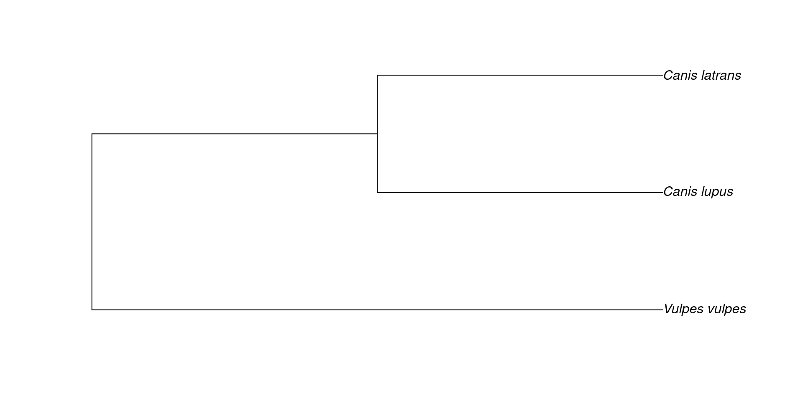Y si agregamos murciélagos, todos ellos pertenecen a los mamíferos:
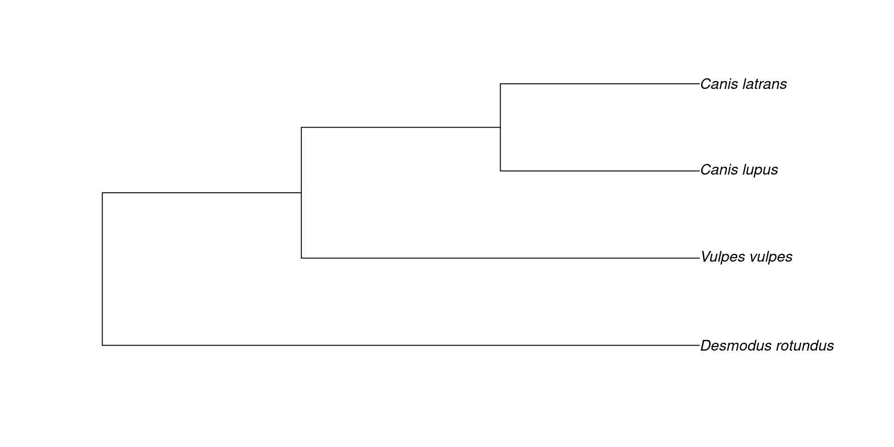Si quisiéramos agregar cuervos y zanates. ¿Estos dónde irían?
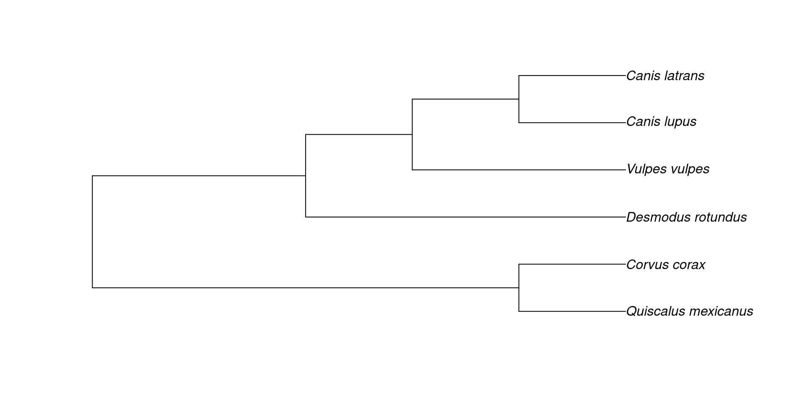Y si agregamos una planta, los mamíferos y las aves se anidarían.
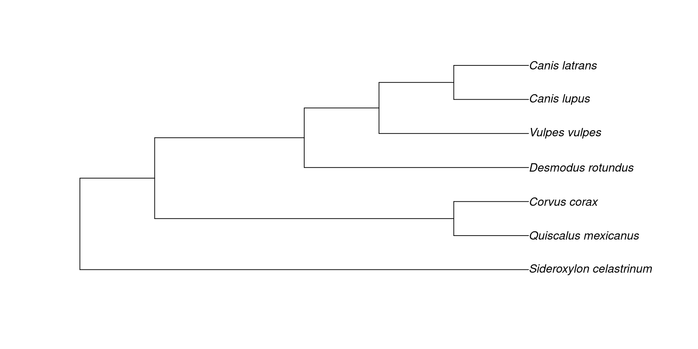ggtree para graficar, personalizar, anotar y en general mejorar árboles filogenéticosEn este ejercicio utilizaremos una filogenia con las especies del Orden Siluriforme a las cuales se le conoce su tipo de migración. Esto es un subset de la Megafilogenia para peces propuesta por Rabosky (2018)
Veamos esta filogenia graficándola, usando ape, la manera base para R.
Ahora graficaremos el mismo árbol utilizando ggtree, el cual sigue una formula idéntica a la de ggplot. Nuestro árbol base se llamará p1:
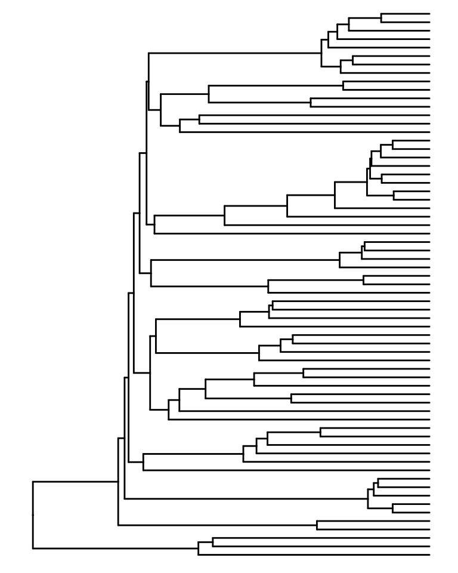Con p1, al igual que con cualquier otro gráfico de ggplot, podemos agregar parámetros gráficos para personalizar o agregar anotaciones a nuestra filogenia. Primero empezaremos con los parámetros de personalización. Por ejemplo, podemos cambiar la disposición de la filogenia utilizando el parámetro layout_:
También podemos cambiar el color del fondo del gráfico
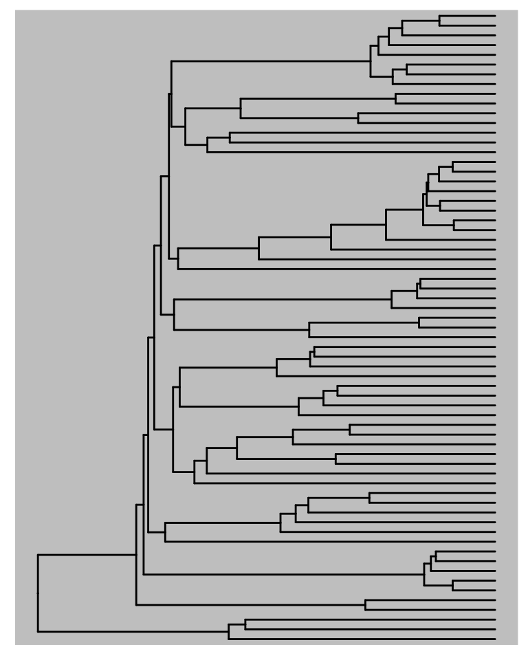Agregar las etiquetas para las puntas de una manera personalizable:
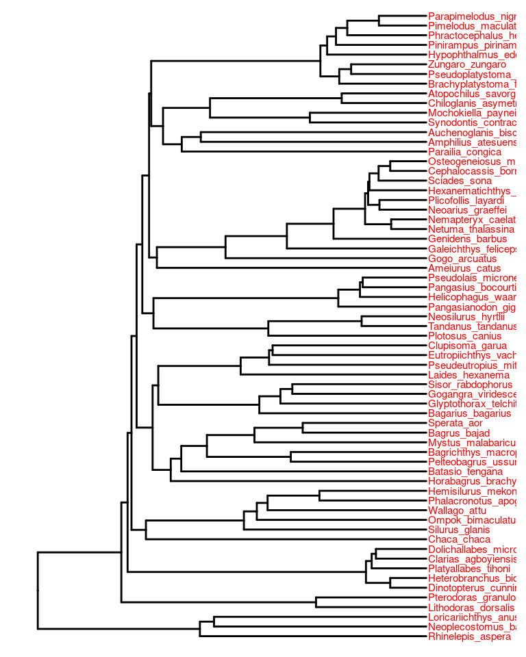formas a las puntas:
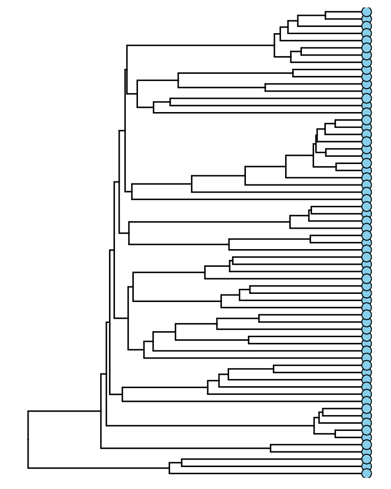Etiquetas a los nodos:
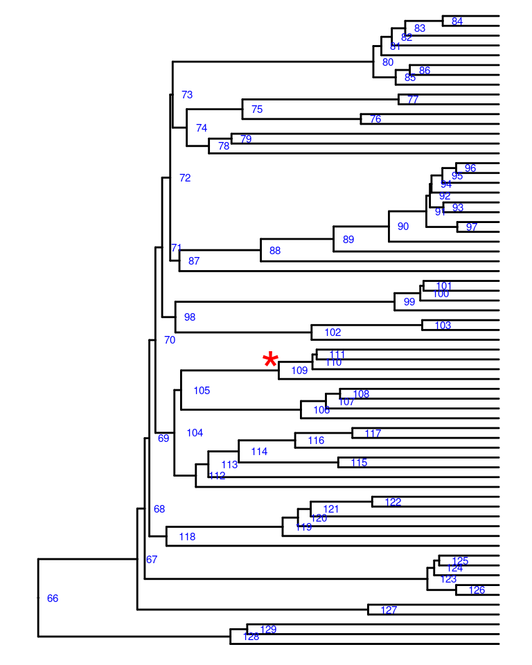o formas a los nodos:
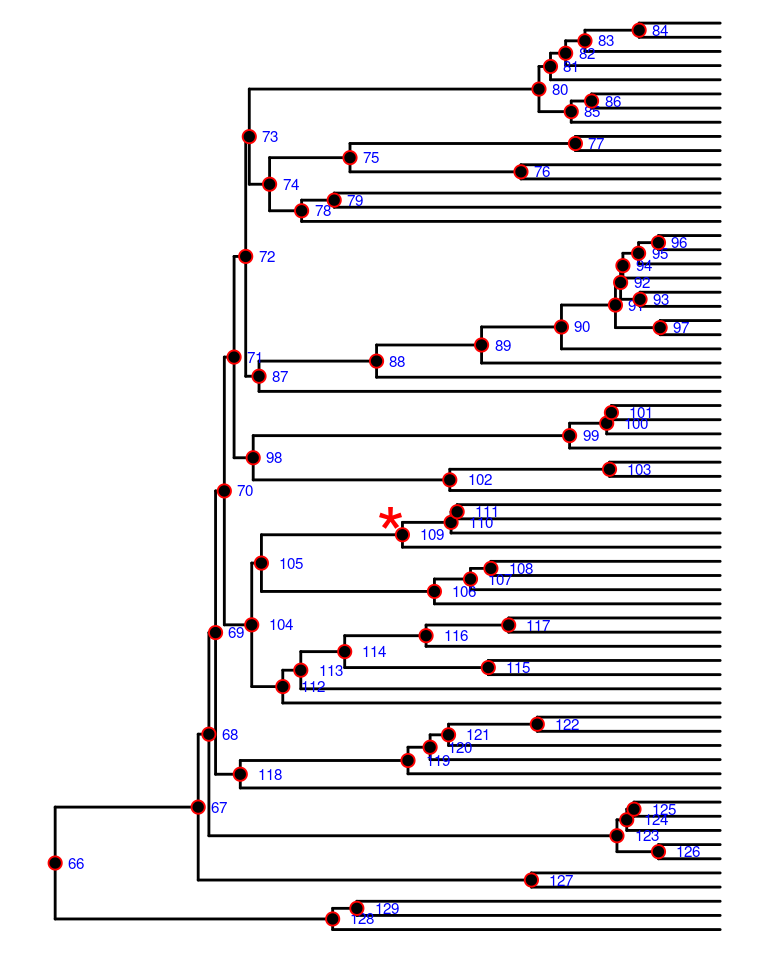e incluso agregar una escala temporal a la filogenia, con la ayuda del paquete deeptime
ggtreeCómo en ggplot, todos estos parámetros son aditivos, por lo cual puedes construir la filogenia de manera gradual
Ahora para la anotación de los árboles, se pueden hacer varias cosas, por ejemplo, quiero seleccionar la parte de la filogenia donde se encuentra las especies de la Familia Pimelodidae
Para esto primero debemos encontrar el nodo del ancestro en común más reciente para este grupo. Usando un tibble y la estructura de dplyr es muy fácil
Después usando la función getMRCA() podemos encontrar el ancestro en común de estas especies
Ahora sabiendo que el ancestro en común de la familia Pimelodidae se encuentra en el nodo 80, puedo utilizar esta información para anotar la filogenia utilizando el parámetro geom_cladelab:
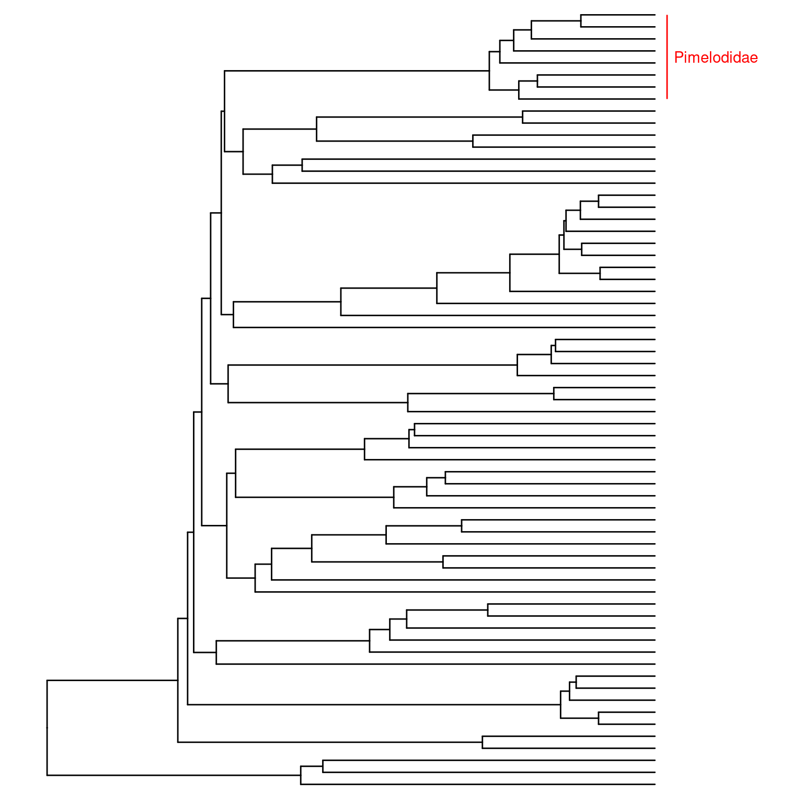y que tal si identificamos varias familias:
Siluridae<-fishdata %>% filter(Family=="Siluridae") %>% dplyr::select(sciname)
nodesiluri<-getMRCA (fishtree,Siluridae$sciname)
Loricariidae<-fishdata %>% filter(Family=="Loricariidae") %>% dplyr::select(sciname)
nodelori<-getMRCA (fishtree,Loricariidae$sciname)
Bagriidae<-fishdata %>% filter(Family=="Bagridae") %>% dplyr::select(sciname)
nodeBagri<-getMRCA (fishtree,Bagriidae$sciname)Ahora podemos jugar con varios parámetros gráficos
p1+xlim(NA, 110)+
geom_cladelab(node=nodepimelo,label ="Pimelodidae",offset=0,barcolor="red",textcolor="brown",angle=0,offset.text=0.1)+
geom_cladelab(node=nodesiluri,label="Siluridae",offset=0,barcolor="blue",textcolor="blue",angle=0,offset.text=0.1)+
geom_cladelab(node=nodelori,label="Loricariidae",offset=0,barcolor="green",textcolor="green",angle=0,offset.text=0.1)+
geom_cladelab(node=nodeBagri,label = "Bagridae",offset=0,barcolor="black",textcolor="black",angle=0, offset.text=0.1)p1+xlim(NA, 110)+
geom_cladelab(node=nodepimelo,label ="Pimelodidae",offset=0,barcolor="red",textcolor="brown",angle=0,offset.text=0.1)+
geom_cladelab(node=nodesiluri,label="Siluridae",offset=0,barcolor="blue",textcolor="blue",angle=0,offset.text=0.1)+
geom_cladelab(node=nodelori,label="Loricariidae",offset=0,barcolor="green",textcolor="green",angle=0,offset.text=0.1)+
geom_cladelab(node=nodeBagri,label = "Bagridae",offset=0,barcolor="black",textcolor="black",angle=0, offset.text=0.1)También podemos modificar parámetros gráficos de las anotaciones.
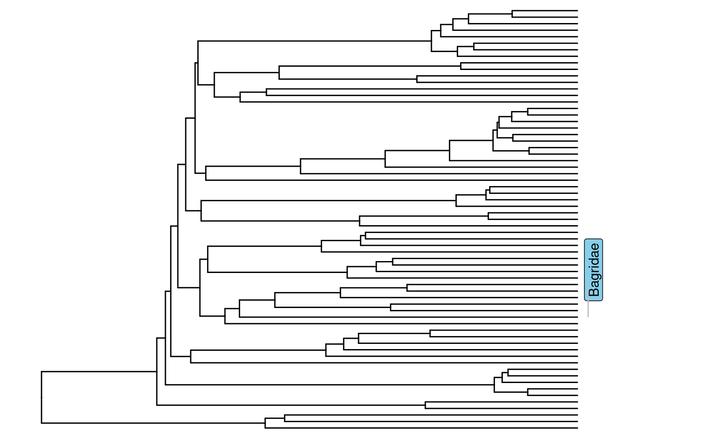También podemos realizar una anotación entre dos taxa, que pudieran o no estar relacionados, utilizando el parámetro geom_strip():
Otro parámetro de anotación muy interesante es geom_highlight, el cual nos permite destacar clados en particular, utilizando los nodos de ancestro en común:
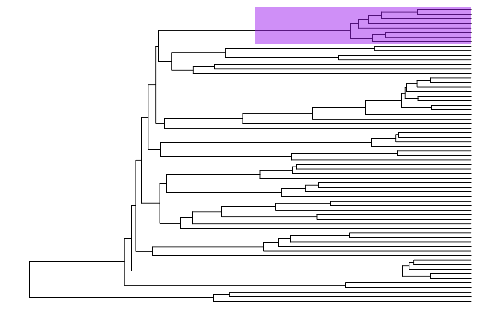¿Qué clado es este? …
Una función bastante interesante de ggtree es que se pueden personalizar las filogenías utilizando recursos en línea como phylopic o enriquecerlas con imágenes propias.
Para poder hacer uso de esta función, primero debemos cargar 2 paquete extra:
podemos probar de la siguiente manera:
[1] "575eaa51-6c9b-4d36-9881-b8463c68ebbc"Hacer uso de phylopic para personalizar las anotaciones de las filogenias requiere que primero hagamos una tabla con los nodos, el nombre de la especie o clado a los cuales vamos a anotar y el phylopic_id.
En este ejemplo utilizaré los clados Pimelodidae, Siluridae,Loricariidae. Encontrar los phylopic_id es fácil usando la función phylopic_uid()
Con estos ids, ya podemos crear nuestra tabla con los datos necesarios y después gráficar nuestra filogenia:
dt<-data.frame(node=c(nodepimelo,nodesiluri,nodeBagri,nodelori),
image=ids$uid,Family=c("Pimelodidae","Siluridae","Bagridae","Loricariidae"),
size=c(0.1,0.1,0.1,0.05))
dt node image Family size
1 80 6cb85c3d-c455-4e9f-bfa3-fa1f8bc5c0cd Pimelodidae 0.10
2 119 7cb387d7-9b23-4e5c-a007-2d938339cb8a Siluridae 0.10
3 113 7a6448e5-09c4-40c8-8378-599d7f974bfe Bagridae 0.10
4 128 e557aeed-4adf-4953-ad1b-45490d3d7f3d Loricariidae 0.05Además, usando la argumentación como en ggplot, podemos personalizar los colores de nuestros phylopics:
Utilizando las funciones que ya conocemos, podemos crear una filogenia bastante atractiva:
p1+ylim(-10,80)+xlim(-10,120)+
geom_cladelab(data = dt,
mapping = aes(node = node, label = Family,
image = image, color = Family),
geom = "phylopic",
imagecolor=dt$colourss,
barcolour=dt$colourss,
imagesize=dt$size,offset.text=5)+
geom_highlight(dt,mapping = aes(node = node, label = Family,color = Family),type="rect",fill=dt$colourss,color=dt$colourss)+
geom_cladelab(node=80,label = "Pimelodiade",geom = "text",offset=0,barcolor="#3d5a80",textcolor= "#3d5a80", offset.text=10)+
geom_cladelab(node=113,label = "Bagridae",geom = "text",offset=0,barcolor="#98c1d9",textcolor= "#98c1d9", offset.text=10) +
geom_cladelab(node=119,label ="Siluridae" ,geom = "text",offset=0,barcolor="#ee6c4d",textcolor= "#ee6c4d",offset.text=10)+
geom_cladelab(node=128,label = "Loricarridae",geom = "text",offset=0,barcolor="#293241",textcolor= "#293241",offset.text=10)O estas:
p2<-ggtree(fishtree,layout="circular",color="white")+theme_tree("black")
p3<-p2+xlim(NA,250)+geom_cladelab(data = dt,mapping = aes(node = node, label = Family,
image = image, color = Family),
geom = "phylopic",
barcolour=dt$colourss,
imagecolor=dt$colourss,
alpha=c(0.8,0.8,0.8,0.8),
imagesize=c(0.2,0.2,0.2,0.1),offset.text=c(130,120,100,100))+
geom_highlight(node=80,fill="#3d5a80")+
geom_cladelab(node=80,label="Pimelodidae",barcolor="#3d5a80",textcolor="white",offset.text=2, fontsize=4,angle =-30)+
geom_highlight(node=113,fill="#98c1d9")+
geom_cladelab(node=113,label="Bagridae",barcolor="#98c1d9",textcolor="white",offset.text=2, fontsize=4,angle =110)+
geom_highlight(node=119,fill="#ee6c4d")+
geom_cladelab(node=119,label="Siluridae",barcolor="#ee6c4d",textcolor="white",offset.text=2, fontsize=4,angle =80)+
geom_highlight(node=128,fill="#293241")+
geom_cladelab(node=128,label="Loricariidae",barcolor="#293241",textcolor="white",offset.text=2,angle = 8)
p3Finalmente, se puede usar ggtree(), para graficar atributos de las especies en la filogenia.
Para hacer esto, primero debemos cargar los atributos de los en este caso usaremos la longitud estándar máxima y el hábito migratorio:
Genus.x Family Order Class
Synodontis_contractus Synodontis Mochokidae Siluriformes Actinopteri
Mochokiella_paynei Mochokiella Mochokidae Siluriformes Actinopteri
Chiloglanis_asymetricaudalis Chiloglanis Mochokidae Siluriformes Actinopteri
Atopochilus_savorgnani Atopochilus Mochokidae Siluriformes Actinopteri
Amphilius_atesuensis Amphilius Amphiliidae Siluriformes Actinopteri
Auchenoglanis_biscutatus Auchenoglanis Claroteidae Siluriformes Actinopteri
salinity Length AnaCat
Synodontis_contractus Freshwater 9.7 Non-migratory
Mochokiella_paynei Freshwater 3.6 Non-migratory
Chiloglanis_asymetricaudalis Freshwater 7.6 Non-migratory
Atopochilus_savorgnani Freshwater 10.5 Non-migratory
Amphilius_atesuensis Freshwater-Marine 9.3 Non-migratory
Auchenoglanis_biscutatus Freshwater 54.0 Potamodromous
label
Synodontis_contractus Synodontis_contractus
Mochokiella_paynei Mochokiella_paynei
Chiloglanis_asymetricaudalis Chiloglanis_asymetricaudalis
Atopochilus_savorgnani Atopochilus_savorgnani
Amphilius_atesuensis Amphilius_atesuensis
Auchenoglanis_biscutatus Auchenoglanis_biscutatusUna vez cargados los datos, la manera más fácil de utilizarlos es uniendolos a la filogenia usando la función full_join, es importante que las especies estén etiquetadas como label, para que la función las reconozca:
¡Listo! Ahora tenemos una filogenia con atributos y podemos graficarlos juntos
Primero graficaremos los valores continuos de la longitud sobre las puntas del árbol en una escala de colores:
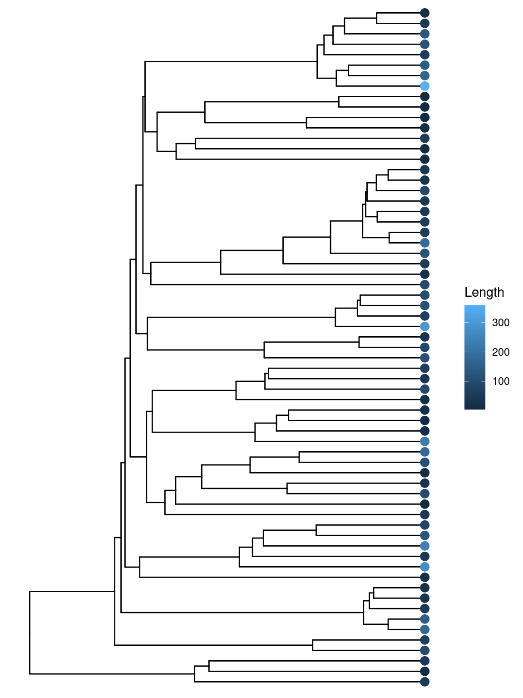podemos también personalizar esta escala:
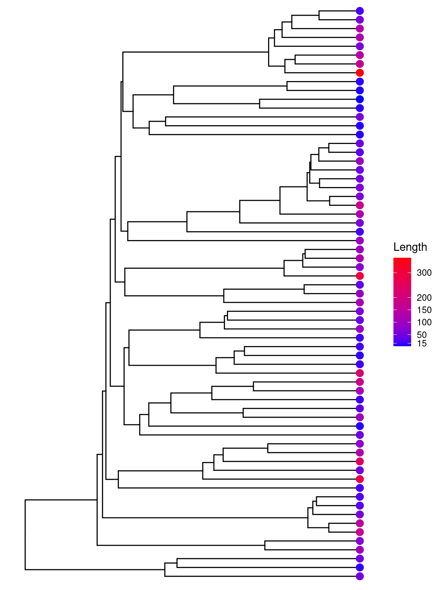¿Y cómo se verían los datos discretos?
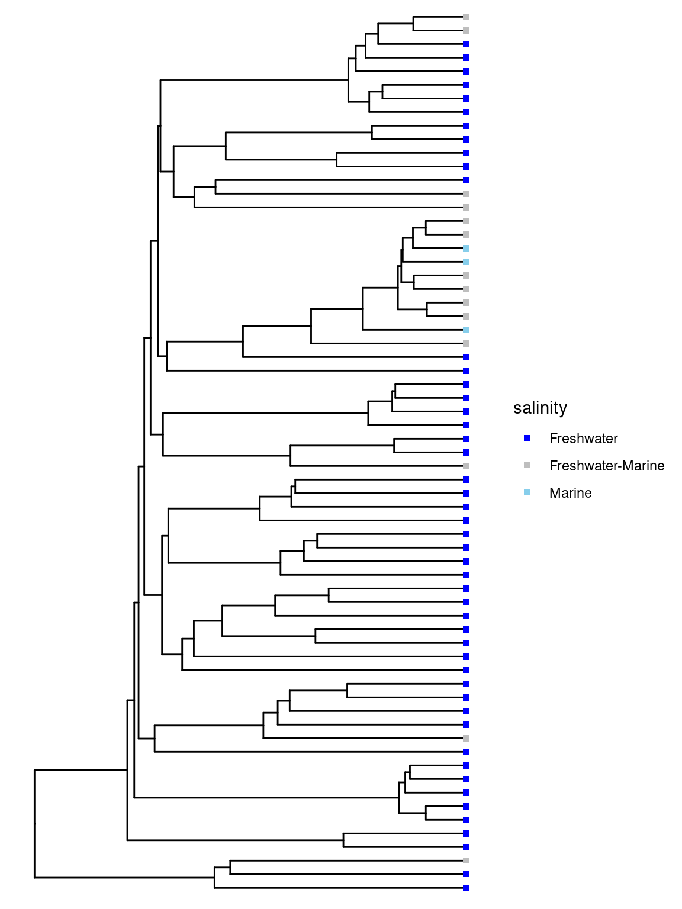y ¿Pueden combinarse?
px<- p4+ geom_tippoint(aes(color=salinity),shape=15)+
scale_color_manual(values = c("blue","gray","skyblue"))+
scale_fill_manual(values = c("blue","gray","skyblue"))
dd<-data.frame(id=p4$data$label,value=p4$data$Length)
px+ geom_facet(panel="Length",data =dd[1:65,],geom=geom_col,
mapping=aes(x=Length,color=salinity,fill=salinity),orientation='y')+
theme_tree2()ggtreeExtra
library(ggtreeExtra)
p5<-p4+geom_tippoint(aes(colour=AnaCat))+scale_color_manual(values = c("#3d5a80","#98c1d9","#e0fbfc","#293241","#ee6c4d"))
p5+geom_fruit(data=dd[1:65,],
geom=geom_bar,
mapping = aes(
y=id,
x=value,
group=salinity,
fill=salinity),pwidth=0.38,
orientation="y",
stat="identity",axis.params=list(
axis = "x",
text.size = 1.8,
hjust = 1,
vjust = 0.5,
nbreak = 3))+ scale_fill_manual(values = c("blue","gray","skyblue"))Para poder anotar las filogenias con imagenes, es recomendable usar árboles filogéticos pequeños. En este ejemplo usaremos una filogenia parafiletica con las Familias Pimelodidae,Doradidae y Loricariidae
Entonces, primero recuperamos un representante de cada grupo, ape es muy bueno para esto usando la función keep.tip:
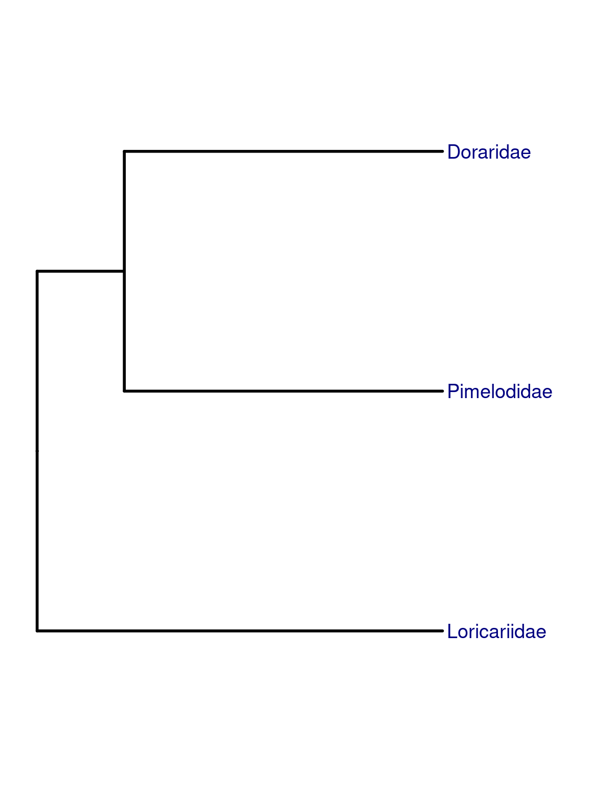Una vez teniendo este árbol parafilético, podemos colocar las imagenes en cada tip, es importante considerar, que las imagenes deben tener el nombre exacto del grupo o especie y el mismo formato:
Las fotos aqui presentadas provienen del Proyecto cavfish
Pero, ¿Qué pasa si no me sé la taxonomía o no tengo la filogenia del grupo que estoy estudiando?
¿Se acuerdan de esta filogenia?
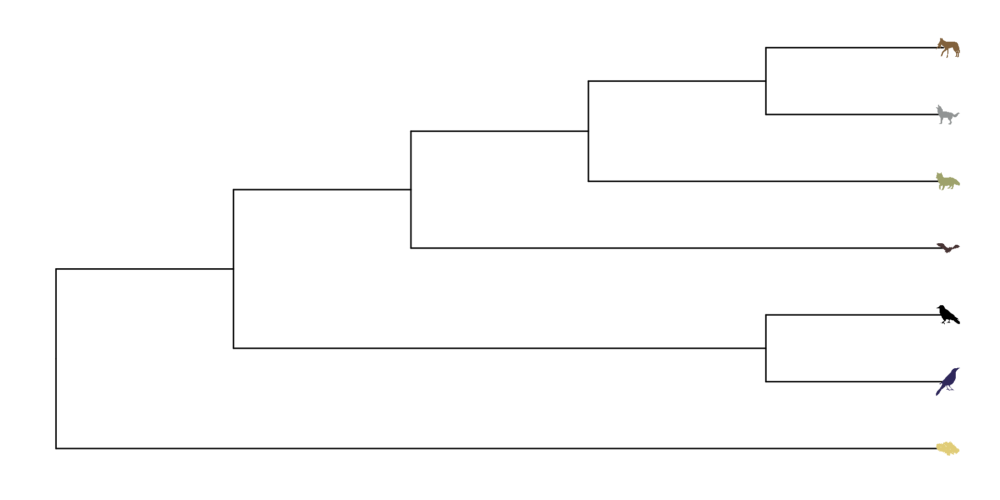Haciendo uso de recursos en línea como Open tree of Life(OTL), podemoos obtener una filogenia utilizando las especies que necesitemos.
OTL tiene un útil paquete en R (rotl),para obtener filogenia
library("rotl")
otl_tree<-rotl::tnrs_match_names(c("Quiscalus mexicanus","Canis lupus","Corvus corax","Canis latrans","Vulpes vulpes","Desmodus rotundus","Sideroxylon celastrinum")) %>%
pull(ott_id) %>%
tol_induced_subtree(label_format="name")
Progress [---------------------------------] 0/209 ( 0%) ?s
Progress [==============================] 209/209 (100%) 0s
Para la función de rtol, NO es necesario introducir las especies en orden, ya que ésta recuperará la taxonomia válida y nos arrojará una filogenia podada.
En este caso, OTL nos regresó exactamente la misma filogenia que creamos al principio:
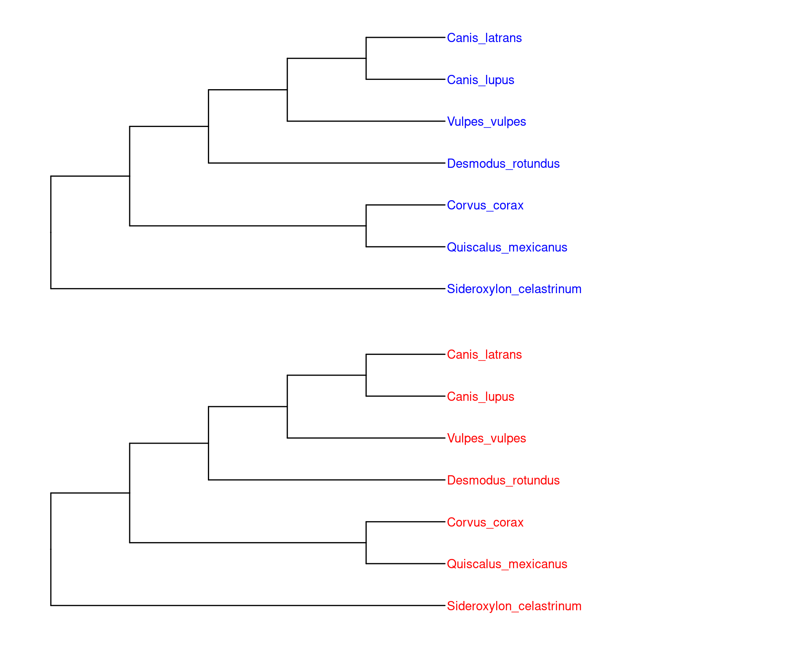